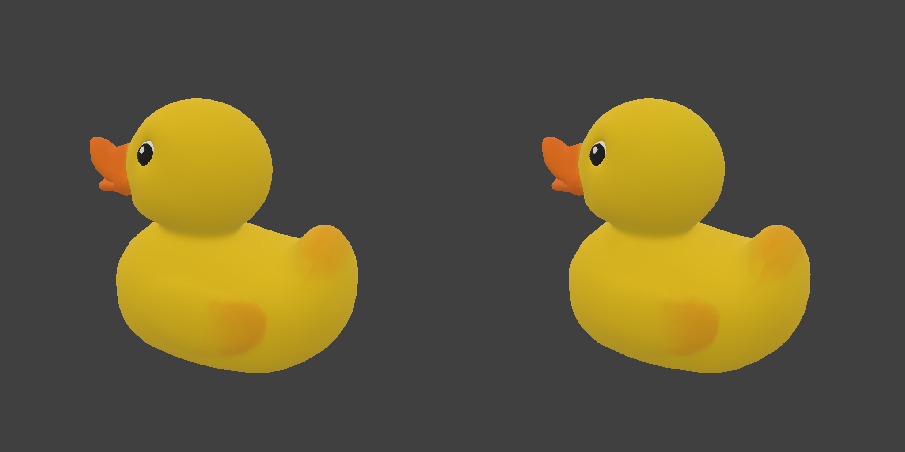

node-assets CLI, updated from Alex's comments
What does the CLI do, how does each part work, and where is the code?
tune renders candidate settings in a headless browser, keeps the smallest (or fastest) result that still looks like the original, and saves the recipe as a small graph file. run applies that graph, or the built-in optimize graph, to as many models as you like.
This is the proposed contract, not the installed package. Source baseline: ab42afe1ac1816cc4232b89bc123375c82d3dfbd. Only this guide changed; no source changes or code approval are implied.
Needs a decision: goal naming/split; render image size vs max texture size (and 4096); SSIM vs pixel-diff naming; load measurement and throttle rates; no-op/overwrite policy; ambiguous missing positional paths. Details are inline. A 97% browser-support filter is deferred, not added.
Suggest a change to the CLI
This page is a review surface for the proposal. Your 17 delivered comments are already incorporated or recorded inline; you don't need to submit them again. Further suggestions don't approve source changes.
Two main jobs: find settings, then apply them
inspect reports a model's properties; show prints the recipe. Limits belong only to a temporary tune run, never to the saved graph.
- graph
- An ordered list of processing steps (blocks) plus a few settings. The CLI adds the input and output steps when it runs one.
- block
- One step from the core library, e.g.
weld,resize-textures,encode-draco. Each has atypeand aconfig. - TOON
- A compact, line-based text format, similar to YAML. Graph files and all command output use it, so both people and agents can read them.
- goal
- Keep size, gpu, and load for now; compat is removed. Alex's question about
disk-size,download-size, andload-speedis pending, not an accepted rename. - fidelity
- Worst-64px-region SSIM over four rendered views. The default 0.9 threshold applies only during that tune run; it is not saved. This is not a pixel-difference ratio.
- decoder
- Code needed to read Draco, meshopt or KTX2. Count each required codec once per model for size/load scoring; do not divide its cost across inputs. A viewer may share or cache codecs across models, but the CLI doesn't predict that.
What each command does
Four work commands and --help. Structured results use TOON on stdout; progress goes to stderr. Source paths below refer to the unchanged baseline, not completed implementation.
| Command | What it does | Browser? | Writes files | Source | |
|---|---|---|---|---|---|
node-assets | Same help as node-assets --help; no current-folder model or graph listing. An unknown top-level command also shows this help. | No | Nothing | cli.ts, commands/home.ts | |
--help | Conventional usage, description, flags and examples. Use node-assets tune --help for a command. Missing/unknown command input shows its nearest command's help, not a help pseudo-command. | No | Nothing | help.ts, cli.ts | |
inspect | Headless metrics only by default: bytes, GPU estimate, triangles, textures, codecs and extensions. Codec download cost is per model, with a shared/cache-cost note rather than batch calculations. | No | Nothing | commands/inspect.ts | |
inspect --compare | Adds SSIM against one original, or same-named originals in a folder (extension ignored). Renamed from the baseline comparison flag; same usage. | Yes | Nothing | commands/inspect.ts | |
tune | Searches settings for each goal. Saves the winning graph and a preview image. | Yes | .toon + .png | commands/tune.ts, tune/ | |
run | Applies a graph to one or more models, without rendering, saved limits or provenance extras. No-op/overwrite behavior after removing hashes still needs a decision. | No | .glb | commands/run.ts | |
inspect --include load-time | Proposed comma-separated opt-in list. Only load-time is named so far. Actual browser load measurement and throttle rates are pending, not implemented. | Proposed | Nothing | commands/inspect.ts | |
show | Prints a graph (built-in or file) so you can read or copy it. | No | Nothing | commands/show.ts |
Help examples: node-assets foo → top-level help; node-assets tune or node-assets tune foo → tune help in principle. But foo can also be a positional model path: deciding when a nonexistent/unsupported path means help versus a file error is still open. Valid command file failures must not all become help. Help-fallback exit status is not decided here.
The man page at packages/cli/docs/node-assets.1.md and packages/cli/README.md still describe the baseline.
Build a command and see what it would do
Illustrative proposed-command simulator, not the installed CLI. Pick a command and fill in flags to see the proposed plan or validation. It does not execute commands, measure loads or guarantee baseline output. Leave a field empty to omit a flag.
Proposal only; this deliberately differs from baseline ab42afe. The simulator guesses extensionless input paths are folders and .toon/.glb outputs are files. Real path kind/validity must come from the filesystem, so dotted folders and extensionless files cannot be resolved here. File failures remain distinct from usage help.
What "best" means for each goal
Every candidate must pass the fidelity limit first. Among those that pass, tune keeps the one with the lowest score. Scores within 1% of the best count as a tie; ties go to higher fidelity, then fewer bytes.
size
No shared-codec adjustment. This is not a measured gzip/Brotli transfer size. Pending: split into disk-size (file only) and download-size (includes codecs)?
gpu
Least estimated GPU memory. Use the existing 4 B/px approximation for non-KTX2 images, not a claim that every image has four channels. 4/3 approximates mipmaps; KTX2 and Draco handling retain baseline estimates. Implementation TODO: check actual R/RG/RGB/RGBA channel/storage behavior; no source TODO was added in this doc-only pass.
load
Keep the load name while load-speed naming is discussed. Baseline uses provisional download + decode estimates, not measured browser loads. Proposed throttle presets don't yet define numeric rates. Each codec counts once per model, never shared across the batch.
Goal names need a decision
Compat is removed, not renamed. disk-size / download-size / load-speed were questions, so they are not accepted builder values yet. A browser-support filter around 97% global coverage is deferred, not a goal or working feature.
Legacy provisional-estimate explainer
Historical decode coefficients from measure.ts / loadModel.ts, not proposed measured behavior. Duck presets come from a9329e2; tuned image bytes are estimates. This explainer removes the old shared-cost calculation and uses explicit, editable Mbps—not a mapping for none or Chrome presets. Its numbers are neither new evidence nor proposed CLI stdout.
Codec bytes count once per model. Viewer reuse or caching may change real download costs; no cross-model prediction.
A fixed search plan, not trial and error
The retained baseline search plan tests textures and geometry separately, narrows them, then builds promising pairs. Below it is adapted to three proposed goals and per-model codec costs; it has not been run on the proposal. Fidelity limits live only in this tune run, not the resulting graph.
Shortcuts that save renders
- Cache: a candidate with the same settings is never rendered twice. Intermediate models (after cleanup, after textures) are cached by their block list, so a new candidate re-runs only the stages that changed. Up to 6 are kept.
- Predicted pairs: pair bytes ≈ texture result + geometry result − baseline. Only the best 4 predictions per goal get built each round.
- Early stop: a round stops when the next pair can't beat the current best by 0.5%, or at the first pair that passes.
- Skip doomed pairs: if a pair failed, any pair whose texture and geometry are both the same or lossier is skipped.
Temporary tune timeout
--timeout(default 420 seconds) covers the whole run, all inputs.--timeout 60means 60 seconds; unit suffixes such as2d,90sor7mare not accepted.- When time runs out, tune stops starting new work but always checks each input's baseline.
- The retained search behavior writes the best result so far and reports
search: partialin command output. Rerun with a longer timeout to continue searching; limits and timeout are not saved to the recipe. - Each candidate prints one progress line on stderr:
tune: <label>: <MB> MB, GPU <MiB> MiB, fidelity <score>, plus(below limit)when it fails.
Which blocks each setting becomes
tune searches over a few "stages" and compiles the winner into blocks. Source: tune/stages.ts.
| Stage | Blocks, in order | When |
|---|---|---|
| cleanup | metal-rough, dedup, cull-unused, weld | Always (lossless) |
flatten | No animations, and no --keep hierarchy | |
instance {min: 2} | No --keep hierarchy | |
| textures | resize-textures {maxSize, slots: all} | Chosen size is below the original's largest texture |
encode-ktx2 {mode, slots: all, etc1sQuality 128, uastcQuality 1, zstd} | KTX2. Mode is etc1s or uastc if both map kinds match, else auto | |
encode-textures ×2 (color at quality, data at data quality) | WebP, AVIF, JPEG, PNG. AVIF quality is scaled by 0.7, so q30 → 21 | |
| geometry | simplify {ratio, error: 0.002} | Ratio below 1 |
one of dequantize · quantize · encode-meshopt {level} · encode-draco (14/10/12 or 11/8/10 bits) | Per the chosen geometry mode | |
cull-unused | Always last |
How "still looks like the original" is measured
The retained metric is worst-64px-region SSIM over four rendered views. In tune, a candidate below that run's threshold is rejected. inspect --compare reports the score only: no pass/fail limit.
--view sets the comparison image resolution: default 1024 px, tune range 64–4096. Alex requested --max-texture-size and a 4096 default assuming it capped textures. Those changes remain an open question; this guide does not silently rename the render-size control or change its default.
SSIM is not pixel diff.
--fidelity is a minimum SSIM threshold (>0 to 1, default 0.9). Requested --min-pixel-diff-ratio naming needs a metric/naming decision; neither a new metric nor a rename is implemented here.
Details that matter
- Score is SSIM on brightness (Rec. 709), over a 50% gray background. 1 means identical.
- Only tiles more than 25% covered by the model count. The model mask is grown by 3 px so edges are included.
- Candidates use the original's camera position, so a model that shrinks or moves loses points.
- The tune limit holds only for that run at its render image size. For a larger comparison image (zoom, VR), use
--view 2048; this does not set a maximum texture size. - Static pose only. Animations aren't checked.
- It's a numeric check, not a perceptual guarantee. The 0.9 default hasn't been re-validated on the Babylon.js renderer yet. Look at the preview images.

A graph is the recipe, saved as text
Blocks run top to bottom; run adds input and output blocks. The proposed graph is a recipe, not a policy: no fidelity or other limits, timeout, or saved tune constraints. Applying it does not enforce the tune session's limits.
graph: 1 name: duck.size goal: size blocks[2]: - type: transform.dedup - type: transform.cull-unused
Schema example, not a claimed tune winner. No saved limits or provenance extras.
Legacy baseline recording: show optimize (unchanged stdout)
$ node-assets show optimize
graph: 1
name: optimize
blocks[9]:
- type: transform.metal-rough
- type: transform.dedup
- type: transform.cull-unused
- type: transform.weld
- type: transform.resize-textures
config:
maxSize: 2048
slots: all
- type: transform.encode-textures
config:
format: webp
quality: 90
slots: color
- type: transform.encode-textures
config:
format: webp
quality: 95
slots: data
- type: transform.quantize
- type: transform.cull-unused
Keys
| Key | Meaning |
|---|---|
graph | Format version. Must be 1. |
name, goal | Labels. tune writes duck.size and size. |
blocks | The steps. Each has a type and optional config; omitted settings use the block's defaults. |
| No limits | The baseline check field is removed. No threshold, timeout or other tune constraints are persisted. |
tuned | If retained, descriptive observations only (e.g. input and result numbers), never constraints or shared-codec state. run does not turn observations into limits. |
No provenance hashes in extras
Proposed output has no CLI provenance hashes in extras.nodeAssets. The baseline's automatic no-op detection depends on those hashes, so no-op and overwrite policy are unresolved. No sidecar or replacement mechanism is proposed here, and preserved no-op behavior is not promised. Keep the existing safety rule against overwriting an input.
Strict on purpose
Retain validation of unknown keys, blocks, settings and out-of-range block values as BAD_GRAPH. To customize: node-assets show optimize > graphs/mine.toon, edit, apply with run, then optionally use inspect output.glb --compare original.glb for a score, not a saved pass/fail policy. Existing graphs with the removed field will need a migration decision; no silent compatibility is promised.
Reading what the CLI prints
The proposal retains TOON results/errors on stdout and progress on stderr. Help uses conventional usage/flags/examples. Unknown commands show nearest help instead of the old usage-error recording below. No new output has been verified.
TOON in 4 lines
key: valueis one field.help[2]: a,bis a list of 2 values.results[2]{input,goal,bytes}:is a table: 2 rows follow, each comma-separated in that column order.- Strings are quoted only when needed: commas, colons, quotes, brackets, a leading
-or#, or text that looks like a number ortrue.
Proposed structured error shape (illustrative)
error: "unknown goal \"speed\"" code: USAGE help[1]: "goals: size, gpu, load"
Read code to decide what to do, and help for the fix. When one of many inputs fails, the others still run: inspect and run show it as a row with status: failed, and tune lists it under failed.
Legacy evidence, not recommended commands
Show unchanged baseline recordings and old flags
These are historical stdout/stderr, not updated proposed output. They deliberately retain old flags, current-folder discovery, estimated load_s, saved limits and hash-based no-op behavior. None proves the proposed removals/renames or measured loads. Do not copy these as the new contract.
Exit codes
0 · success
Work succeeded. No-op success semantics after hash removal are pending.
1 · something failed
An input or processing step failed. There is no proposed run threshold check.
2 · usage error
Bad arguments. Nothing was done.
Retained baseline work/error statuses, not new execution evidence. Help-fallback exit status still needs a decision; don't infer exit 2 from the legacy missing-input transcript.
Error codes
| Code | When | Fix the CLI suggests | Source | |
|---|---|---|---|---|
USAGE | Bad flag/value remains a validation error. Missing/unknown command input shows nearest help; ambiguous positional paths are unresolved. | Valid values or command help, as applicable | arguments.ts, cli.ts, commands/* | |
INPUT_NOT_FOUND | An input path doesn't exist | "Paths are relative to <cwd>" | inputs.ts | |
INPUT_NOT_FOUND | --compare folder has no same-named original | Pass the original directly: --compare <original> | commands/inspect.ts | |
INPUT_NOT_FOUND | A graph file can't be read | "node-assets show optimize > mine.toon" | graphFiles.ts | |
UNSUPPORTED_FORMAT | File extension isn't supported | How to export it (Blender, Maya, 3ds Max…) or the supported list | inputs.ts | |
INVALID_INPUT | Not a regular file, broken model, disallowed resource paths, or no tune candidate met that run's temporary limit | e.g. longer --timeout or lower SSIM threshold with --fidelity (name pending) | inputs.ts, tune/search.ts | |
OUTPUT_EXISTS | Existing output safety; exact policy after hash removal is unresolved | Choose a separate output; --force semantics remain pending | commands/run.ts, files.ts | |
BAD_GRAPH | Unknown built-in, invalid TOON, unknown key or block or setting, value out of range | Names the valid choices | graphFiles.ts | |
NO_BROWSER | No usable browser for rendering, or $NODE_ASSETS_CHROMIUM isn't an executable | "npx playwright install chromium" | render/browser.ts | |
INTERNAL | Anything unexpected. Shows the first line of the message. | None | output.ts |
Which browser renders, and how
tune and inspect --compare render; run and default inspect do not. Browser-based inspect --include load-time is proposed, not implemented. The discovery ladder below describes baseline rendering only; it is not evidence of load measurement.
- 1
$NODE_ASSETS_CHROMIUMIf set but not an executable, fail withNO_BROWSER. No fallback, so a typo can't silently pick another browser. - 2Google ChromeStandard install paths on macOS, Windows, Linux.
- 3Microsoft EdgeSame.
- 4Chromium (Linux only)
chromium/chromium-browseron PATH,/usr/bin,/snap/bin. - 5Playwright's ChromiumIf
npx playwright install chromiumwas run. - ✕
NO_BROWSERhelp:npx playwright install chromium
Render setup
- Headless, with software WebGL (SwiftShader), so results don't depend on the GPU.
- Files are served from
127.0.0.1on a random port. Requests to any other origin are blocked. - Browser profile and scratch files go in
./_render-<uuid>and are removed afterwards. - Scores can still differ slightly between browsers and machines.
--network-throttling: none (default), fast-4g, slow-4g, 3g. Familiar Chrome labels, not guaranteed fixed rates. Exact rates and measurement implementation are pending. Baseline estimated load_s does not exercise real browser throttling.
Where the code lives
Unchanged source map at baseline ab42afe (about 2,630 TypeScript lines), not an implemented proposal. Click a module to discuss a future change. Counts, files and old tests remain historical source context.
graphs/optimize.toon · docs/node-assets.1.md (man page) · docs/calibration.md + dev/calibrate (load-model fitting, not run) · README.mdskills/node-assets-cli/SKILL.md still points at the legacy manual command. The proposal calls for node-assets --help; no skill/source file was edited.tests/)e2e:
cli, cliTune, cliTuneOptions · integration: cliRender · unit: cliBrowser, cliCalibrate, cliCommands, cliDiagnostics, cliExecution, cliGraphFiles, cliInputs, cliMeasure, cliProvenance, cliRun, cliTuneBudget, cliTuneCache, cliTuneCompat, cliTuneRanking, cliTuneStages. Legacy compat/provenance tests do not make those features part of the proposal.What's proven, and on which code
No new CLI tests, render runs or calibration in this guide update. Historical checks below apply only to their recorded baseline, never to the proposed flags, removals or measured loads.
| Claim | Status | Basis |
|---|---|---|
| Historical install, help, show, inspect, run optimize, hash-based no-op re-run, usage error | baseline only · ab42afe | Previously recorded disposable install of node-assets-cli-0.1.0.tgz (sha256 8e111cc1…9b76). No rendering. Full source identity: ab42afe1ac1816cc4232b89bc123375c82d3dfbd. |
| Legacy tune, run with its old check flag, and inspect with its old comparison flag on duck/helmet | legacy render · a9329e2 | Real render run before the 6-commit structure cleanup. The cleanup was checked by tests and an output comparison, not a new render. Old stdout is folded under legacy evidence. |
| Agents using tune got within 1.09× of the best result, vs 2.11× worse setting options by hand | historical | 54 graded agent runs on the research prototype, with a different renderer. Not re-run on this build. Source: research/cli-v2/docs/node-assets.2.md |
| SSIM ≥ 0.9 means "looks the same" | numeric only | A numeric check, not a perceptual guarantee. Not re-validated on Babylon.js yet; a Scout handoff is drafted. |
| Baseline load_s | estimate, not measured | Headless download + decode estimate with provisional coefficients. No real load measurement/throttling exists; proposed include-list and throttle labels do not change this fact. |
| Platforms | macOS only | Windows and Linux browser paths exist but are untested. |
Proposed size score | not implemented | File bytes plus codec bytes once per model, no shared adjustment; not measured gzip/Brotli transfer size. Goal naming/split is pending. |
Remaining questions, with your comments already recorded
These are unresolved details, not a request to repeat decided changes. Compat, shared-cost calculations, saved limits and provenance extras are already removed from the proposal. The source remains unchanged.
Not in v0.1.0
- A stronger built-in
optimizepreset (deferred). - A strict "clean tree" guard before packing (deferred).
- Measured load-time implementation and precise throttling rates are pending; the old coefficient model is only an explainer.
- Re-validating the 0.9 SSIM default remains separate work (no rendering in this pass).
- Windows and Linux testing.
- USD input needs
NODE_OPTIONS=--experimental-web-workeron Node versions that offer it.
- Proposal details: goal naming/split, render size naming/default, metric naming, no-op/overwrite policy and positional help ambiguity remain open inline.
- No implementation, push, publication or release is authorized by this doc update.
- Deeper reading:
packages/cli/README.md,packages/cli/docs/node-assets.1.md,research/cli-v2/HANDOFF.md.